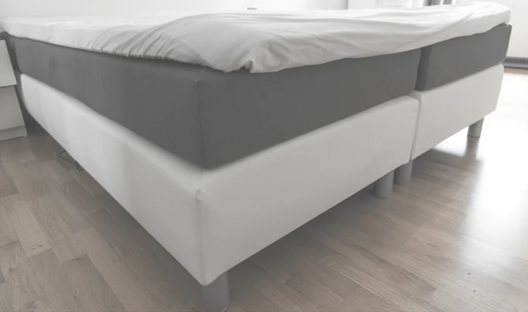
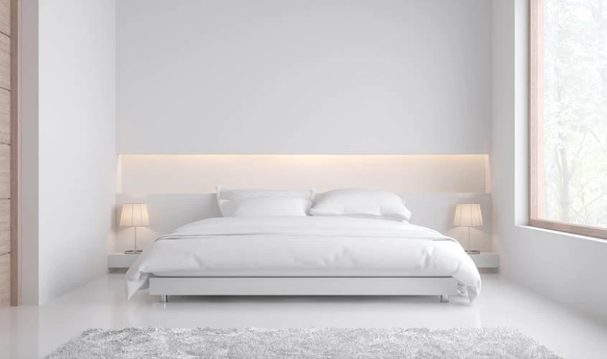
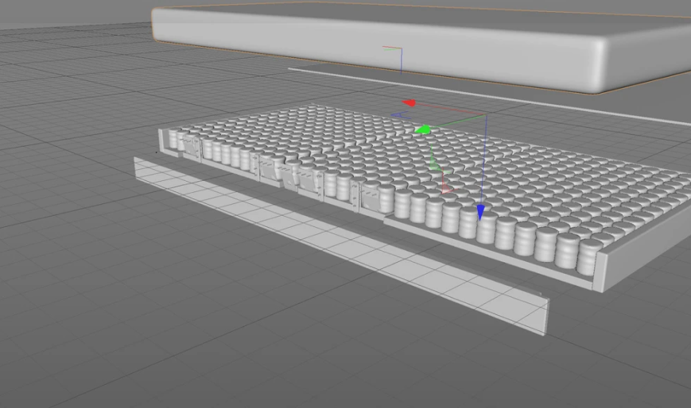
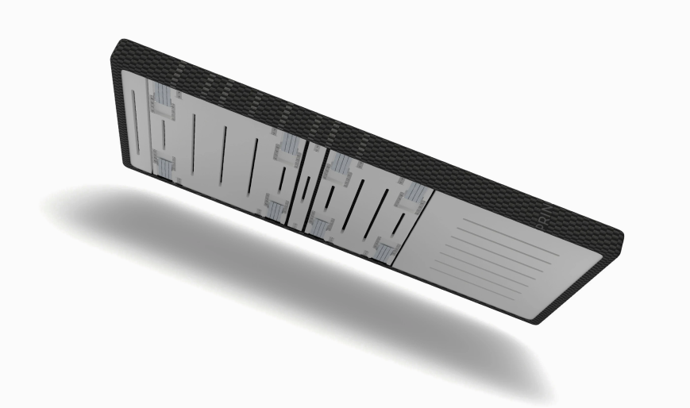

Deutscher Erfindergeist
Boxspring-Betten ähneln sich, sind wuchtig und raumfüllend. Lattenrostsysteme bieten wenig Komfort. Aus Mangel an Alternativen startete ich 2013 mit der Entwicklung eines Schlafsystems, welches sowohl hohen Komfort als auch minimalistische Designs ermöglicht.
Jörg Hubrig, Gründer von CREED und Erfinder der Double Spring Box
Die Motivation, die zur Entwicklung der Box führte, war der Wunsch Design-Betten mit einer hochwertigen Boxspring-Unterfederung auszustatten. Ziel war das Einheitsdesign der handelsüblichen Boxspring-Betten, die in Schlafzimmern zu viel Raum einnehmen, zu durchbrechen.
Boxspring-Betten-Alltag
Eine Marktanalyse bestätigte, dass hoher Schlafkomfort für die meisten sehr wichtig ist. Allerdings entscheiden sich viele für die weniger komfortablen Lattenrost-Betten aufgrund der Vielzahl von schlanken und modernen Designs.
Neue Design-Möglichkeiten
Mit Hilfe von Wissenschaftlern, Schlafforschern, Ingenieuren und Architekten haben wir innerhalb von fünf Jahren die Technologie entwickelt, die zu dem hohen Komfort der Double Spring Box führt.
Im Frühjahr 2019 war es dann endlich soweit. Ein neues Schlafsystem wurde nach über fünf Jahren Entwicklung fertiggestellt. Ein Doppelfedersystem, so schlank wie ein Lattenrost; der Komfort besser, als bei hochwertigen Boxspring-Bett-Untergestellen und mit einer auf alle Bedürfnisse anpassbaren Einstellung des Härtegrades.

Mit der Double Spring Box leiten wir die Revolution des 21. Jahrhunderts im Bettenmarkt ein. Sie löst nach hunderten von Jahren den Lattenrost, dessen Konstruktion veraltet ist, ab. Wir haben es geschafft ein Matratzenuntergestell zu entwickeln, welches ohne die hohen Anschaffungskosten eines Boxspring-Bettes in nahezu jedes Bett im Austausch gegen den Lattenrost passt.
Jörg Hubrig, Gründer von CREED und Erfinder der Double Spring Box